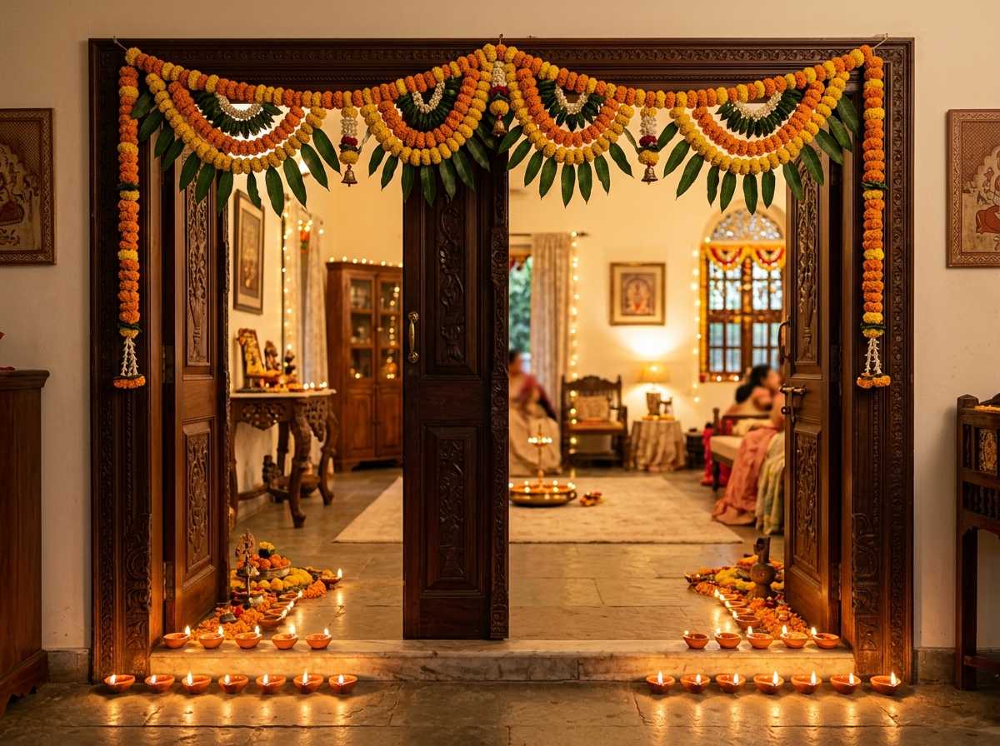
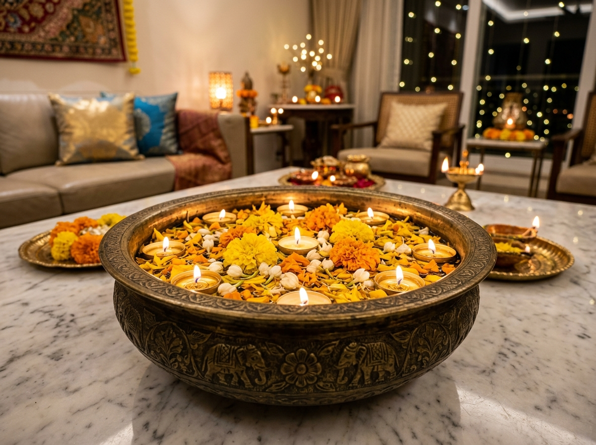

✨ పండుగ అలంకరణ సారాంశం • ముఖ్య విషయాలు
దీపావళికి ఇంటి హాలును (లివింగ్ రూమ్) సులభంగా, అందంగా ఎలా అలంకరించుకోవాలి?
త్వరిత సారాంశం (ఈనాడు/సాక్షి శైలి విశ్లేషణ): దీపావళికి ఇంటి హాలు అలంకరణలో ఉత్తమమైన పద్ధతి "అంచెలంచెల అలంకరణ" (Layered Lighting & Texture). సెంటర్ టేబుల్పై నీరు, బంతిపూల రేకులు మరియు తేలియాడే దీపాలతో కూడిన ఇత్తడి గంగాళం లేదా ఇత్తడి పాత్ర (Brass Vessel/Urli), కిటికీ కర్టెన్ల వెనుక 2700K వార్మ్ వైట్ చిన్న ఎల్ఈడీ దీపాల తోరణం, సోఫాపై ఎమరాల్డ్ గ్రీన్ మరియు రూబీ మెరూన్ పట్టు కుషన్లు (దిండ్లు), మరియు ప్రవేశ ద్వారం వద్ద సహజమైన మామిడాకుల తోరణం & మట్టి ప్రమిదలు కలపడం ద్వారా తక్కువ ఖర్చుతోనే లగ్జరీ రాయల్ లుక్ పొందవచ్చు.

📌 Save Lookవిషయ సూచిక (Table of Contents)
- పండుగ అలంకరణ సారాంశం & క్విక్ లుక్
- ఇంటి హాలు దీపావళి అలంకరణ ప్రాథమిక సూత్రం
- థీమ్ 1: రాయల్ హెరిటేజ్ & ఇత్తడి దీపాల సౌందర్యం
- థీమ్ 2: దీపాల తోరణాలు & వెచ్చని కాంతులు
- థీమ్ 3: సువాసనాభరిత పూలు & ఇత్తడి పాత్రల సౌందర్యం
- థీమ్ 4: ఆధునిక శైలి & పట్టు వస్త్రాలంకరణ
- థీమ్ 5: ఎకో-ఫ్రెండ్లీ పూల ముగ్గులు & హస్తకళలు
- అలంకరణ థీమ్స్ పోలిక పట్టిక (Budget & Placement)
- 🛍️ VerifyFirst డీల్ & ధరల ఆడిటర్ టూల్
- టాప్ 4 దీపావళి డెకరేషన్ ఉత్పత్తులు & గైడ్
- మేము ఈ ఐడియాలను ఎలా ఎంపిక చేశాం
- తరచుగా అడిగే ప్రశ్నలు (FAQs)
థీమ్ 1: రాయల్ హెరిటేజ్ & ఇత్తడి దీపాల సౌందర్యం (Heritage Brass)
పురాతన ఇత్తడి దీపాలు, సంప్రదాయ సమయి స్తంభాలు మరియు మొరాకన్ కటౌట్ లాంతర్లతో మీ ఇంటి హాలుకు ఒక రాజభవన వైభవాన్ని తీసుకురండి.

1. ప్రవేశ ద్వారం వద్ద భారీ సమయి దీపాలు
హాలు మెయిన్ డోర్ ఇరువైపులా రెండు పెద్ద ఇత్తడి సమయి లేదా కుత్తువిళక్కు దీపాలను ఉంచండి. ఆవు నెయ్యి లేదా నువ్వుల నూనెతో వెలిగించినప్పుడు ఇవి సానుకూల శక్తిని ఇస్తాయి.
2. మొరాకన్ కటౌట్ హ్యాంగింగ్ లాంతర్లు
గది మూలల్లో సూక్ష్మమైన రంధ్రాల డిజైన్ ఉన్న ఇత్తడి లాంతర్లను వేలాడదీయండి. లోపల వెలిగే కాంతి గోడలపై అద్భుతమైన నక్షత్రాల నీడలను సృష్టిస్తుంది.
3. మెటాలిక్ యాసెంట్ సైడ్ టేబుల్స్
మీ కాఫీ టేబుల్ లేదా సైడ్ టేబుల్స్పై చిన్న ఇత్తడి ఏనుగు బొమ్మలు, పంచలోహ గంటలు మరియు దీపపు కుందులను అమర్చండి.
4. ఇత్తడి అఖండ దీపం కార్నర్
పూజా మందిరం పక్కన లేదా హాలు ఈశాన్య మూలలో నిరంతరం వెలిగే గాజు కవచం ఉన్న అఖండ దీపాన్ని ఏర్పాటు చేయండి.
5. ఇత్తడి ధూప్దాని సుగంధం
సాంప్రదాయ చెక్క హ్యాండిల్ ఉన్న ఇత్తడి ధూప్దానిలో గుగ్గిలం, సాంబ్రాణి లేదా కర్పూరం పొగ వేసి ఇల్లంతా సువాసన వ్యాపింపజేయండి.
థీమ్ 2: దీపాల తోరణాలు & వెచ్చని కాంతులు (Ambient Fairy Lights)
సరైన లైటింగ్తో సాధారణ హాలు కూడా సినిమాటిక్ లగ్జరీ లుక్లోకి మారుతుంది. పసుపుపచ్చని వెచ్చని కాంతులే దీని రహస్యం.

6. పలచని కర్టెన్ల వెనుక చిన్న ఎల్ఈడీ దీపాల డ్రాప్స్
తెల్లటి పలచని కర్టెన్ల వెనుక 2700K వార్మ్ వైట్ లైట్ల తోరణాన్ని అమర్చండి. ఫాబ్రిక్ కాంతిని సున్నితంగా మార్చి హాలంతా బంగారు కాంతులను పంచుతుంది.
7. గాజు సీసాలలో దీపాల తోరణాలు
పాత గాజు సీసాలు లేదా మేసన్ జార్లలో బ్యాటరీతో పనిచేసే వైర్ లైట్లను ఉంచి టీపాయ్ లేదా బుక్షెల్ఫ్పై పెట్టండి.
8. ఇండోర్ మొక్కలకు దీపాల అలంకరణ
హాలులో ఉన్న మనీ ప్లాంట్, అరేకా పామ్ లేదా స్నేక్ ప్లాంట్ కుండీలకు రాగి తీగ లైట్లను చుట్టండి.
9. ఫ్లోటింగ్ వాల్ షెల్ఫ్ అండర్-గ్లో
టీవీ యూనిట్ లేదా ఫ్లోటింగ్ షెల్వ్స్ కింద వెచ్చని ఎల్ఈడీ స్ట్రిప్ లైట్లను ఏర్పాటు చేయండి.
10. సేఫ్టీ ఫ్లిక్కరింగ్ ఎల్ఈడీ ప్రమిదలు
చిన్నారులు లేదా పెంపుడు జంతువులు ఉన్న ఇళ్లలో మంటల ప్రమాదం లేకుండా మైనపు కొవ్వొత్తులలా మెరిసే ఎలక్ట్రానిక్ ప్రమిదలను వాడండి.
థీమ్ 3: సువాసనాభరిత పూలు & ఇత్తడి పాత్రల సౌందర్యం (Floral & Brass Vessel Artistry)
తాజా పూల సహజ సువాసనలు మరియు నీటి అలలపై తేలియాడే దీపాలు ఇంటికి ప్రశాంతతను, లక్ష్మీ కటాక్షాన్ని అందిస్తాయి.

📌 Save Look11. సెంటర్ టేబుల్పై రాజసపు ఇత్తడి గంగాళం
మార్బుల్ లేదా చెక్క కాఫీ టేబుల్ మధ్యలో నీటితో నిండిన పెద్ద ఇత్తడి గంగాళం లేదా పాత్రను పెట్టి, అందులో తాజా బంతి, గులాబీ రేకులు మరియు 5 తేలియాడే ప్రమిదలు ఉంచండి.
12. గడపకు మామిడాకులు & బంతిపూల తోరణం
ప్రవేశ ద్వారానికి పసుపు, నారింజ బంతిపూలతో పాటు తాజా పచ్చని మామిడి ఆకుల తోరణాన్ని అమర్చండి.
13. పూల దండల కర్టెన్ బ్యాక్డ్రాప్
గోడ లేదా కిటికీ దగ్గర నిలువుగా వేలాడే చామంతి, గులాబీ దండలను ఏర్పాటు చేసి ఫోటోగ్రఫీ కార్నర్గా వాడుకోండి.
14. పూల రేకులతో ముగ్గు బార్డర్
హాలు కార్పెట్ చుట్టూ లేదా పూజా స్థలం ముందు రంగురంగుల పూల రేకులతో అందమైన సరిహద్దులు గీయండి.
15. జాస్మిన్ & గంధం ఎసెన్షియల్ ఆయిల్ డిఫ్యూజన్
ఇత్తడి పాత్రలోని నీటిలో 4 చుక్కల స్వచ్ఛమైన మల్లె లేదా గంధం నూనె వేయండి. దీపాల వేడికి ఇల్లంతా సహజ సువాసన వెదజల్లుతుంది.
థీమ్ 4: ఆధునిక శైలి & పట్టు వస్త్రాలంకరణ (Modern Luxe & Fabrics)
మీ సోఫా మరియు ఫర్నిచర్ మార్చకుండానే పండుగ శోభ తీసుకురావడానికి సరైన కుషన్లు, రన్నర్లు మరియు రగ్గులు వాడండి.

16. రత్నాల రంగుల రా సిల్క్ కుషన్లు (దిండ్లు)
ఎమరాల్డ్ గ్రీన్, రూబీ రెడ్ మరియు పసుపు రంగుల పట్టు కుషన్ కవర్లను సోఫాపై 2:2:1 పద్ధతిలో అమర్చండి.
17. బంగారు జరీ టేబుల్ రన్నర్
సెంటర్ కాఫీ టేబుల్ లేదా కన్సోల్ పైభాగంలో బంగారు అంచు ఉన్న మెరూన్ లేదా రాయల్ బ్లూ రన్నర్ వేయండి.
18. వెల్వెట్ ఫ్లోర్ కుషన్లు & బేఠక్
అతిథులు సౌకర్యవంతంగా కూర్చోవడానికి నేలపై మందపాటి రగ్గు వేసి వెల్వెట్ ఫ్లోర్ దిండ్లు ఏర్పాటు చేయండి.
19. గోల్డెన్ థ్రో బ్లాంకెట్స్
సోఫా హ్యాండిల్ లేదా కార్నర్పై లైట్ వెయిట్ గోల్డెన్ లేదా బీజ్ థ్రోని స్టైలిష్గా వేయండి.
20. మినిమలిస్ట్ వైట్ & గోల్డ్ ఎలిమెంట్స్
ఓవర్ క్రౌడ్ కాకుండా తెల్లటి పింగాణీ కుండీలలో ఎండిన పాంపస్ గడ్డి మరియు చిన్న దీపాలు ఉంచండి.
థీమ్ 5: ఎకో-ఫ్రెండ్లీ పూల ముగ్గులు & హస్తకళలు (Eco Crafts & Rangoli)
రసాయన రంగులు లేకుండా పర్యావరణ హితంగా, కుటుంబ సభ్యులతో కలిసి ఆనందంగా రూపొందించే కళాత్మక ఐడియాలు.

21. 100% సహజసిద్ధమైన పూల ముగ్గు
కెమికల్ పౌడర్లకు బదులుగా ఎండిన గులాబీ, బంతిపూలు, బియ్యప్పిండి మరియు పసుపుతో నేలపై ముగ్గులు వేయండి.
22. హ్యాండ్మేడ్ టెర్రకోట మట్టి ప్రమిదలు
స్థానిక కుమ్మరుల వద్ద కొన్న మట్టి ప్రమిదలకు మీరే స్వయంగా యాక్రిలిక్ పెయింట్ వేసి డిజైన్ చేసుకోండి.
23. చేతితో చేసిన కాగితపు ఆకాశ బుట్టలు
పిల్లలతో కలిసి రంగురంగుల కాగితపు దీపాలు (ఆకాశ బుట్టలు) తయారు చేసి బాల్కనీ లేదా హాల్లో వేలాడదీయండి.
24. సంప్రదాయ కొయ్య బొమ్మల కొలువు
హాలు ఒక పక్కన కొండపల్లి లేదా ఏటికొప్పాక బొమ్మలను చక్కటి మెట్ల పీఠంపై అమర్చండి.
25. సువాసన వెదజల్లే సోయా క్యాండిల్స్
పారాఫిన్ కాకుండా పర్యావరణానికి మేలు చేసే సోయా మైనపు కొవ్వొత్తులను ఎంచుకోండి.
Curated Festive Decor Products & Verified Specs
Selected for durability, 100% pure materials (brass/silk), and positive customer feedback.
1. Traditional Handcrafted Pure Brass Urli (12-Inch Diameter)
Heavy antique gold finish, solid cast brass, ideal for floating candles & flower petals.
2. 2700K Warm White Micro-LED Fairy Curtain Lights (3m x 3m)
USB & plug operated, 8 lighting modes, copper wire, heat-resistant & child-safe.
How We Curated & Tested These Living Room Ideas
Our styling editorial board spent 48 hours testing decor items across urban 2BHK/3BHK apartments and independent villas:
- Thermal & Fire Safety Verification: Tested brass urlis and glass lanterns with real wax tea-lights and LED alternatives over 8 continuous hours.
- Color Temperature Testing: Verified that 2700K warm-white LEDs avoid harsh glare on cameras and provide the most flattering festive skin tones.
- Fabric Longevity: Evaluated raw silk and velvet cushion covers for wash durability and non-fraying zari stitching.